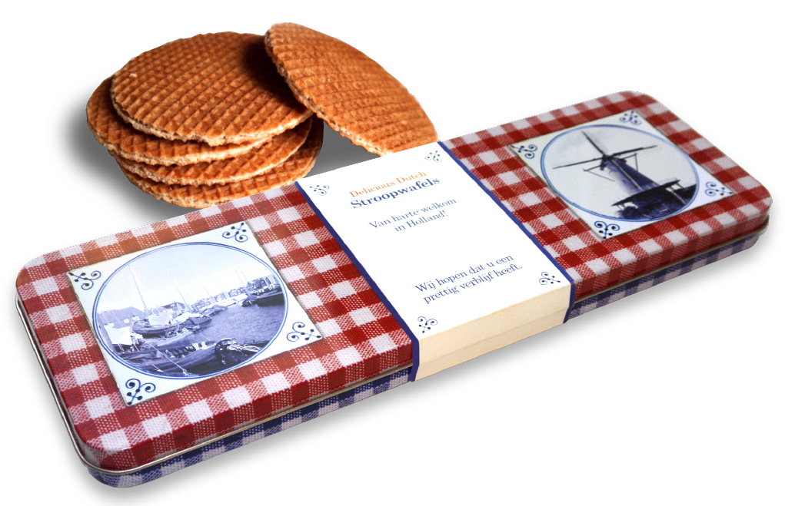

Delicious Dutch Stroopwafels

Het product
De traditionele Nederlandse stroopwafels zijn een zeer welkome traktatie voor elke toerist. Een bezoekje aan ons land gaat dan ook vaak gepaard met het aanschaffen van een kleine voorraad van deze heerlijke koeken. Wat is er dan praktischer dan een verpakking die gemakkelijk mee te nemen is in een koffer of laptoptas? Akpa Holland heeft hiervoor de oplossing: Delicious Dutch Stroopwafels in een plat blik.
Bestel nu
Het blik, vormgegeven met kenmerkende Hollandse elementen, bevat 6 stroopwafels verpakt per 2 stuks.
De blikken kunnen worden voorzien van een sleeve met bijvoorbeeld uw bedrijfslogo of persoonlijke boodschap. Daarnaast kan er in het blik nog een kaart gelegd worden met meer achtergrondinformatie over de stroopwafel, in de taal die u wenst.
Bent u geïnteresseerd in de blikken stroopwafels van AKPA Holland?
Wacht dan niet langer en maak gebruik van de tijdelijke
introductieaanbieding. Bij een bestelling van 20 blikken,
ontvangt u er 5 gratis!
Mail uw bestelling naar
info@akpaholland.nl.
Over AKPA Holland
AKPA Holland is onstaan in 2015 en richt zich met traditionele Nederlandse producten op de toeristen industrie. De lekkernijen uit ons kleine land zijn voor de Nederlander vanzelfsprekend, maar voor iemand die ons land bezoekt vaak zeer speciaal en een unieke ervaring. Denk maar eens aan drop, haring en natuurlijk stroopwafels.
Voor meer informatie over AKPA Holland, kunt u contact opnemen met één van de eigenaren, Paul Alexander of Niels de Jong.